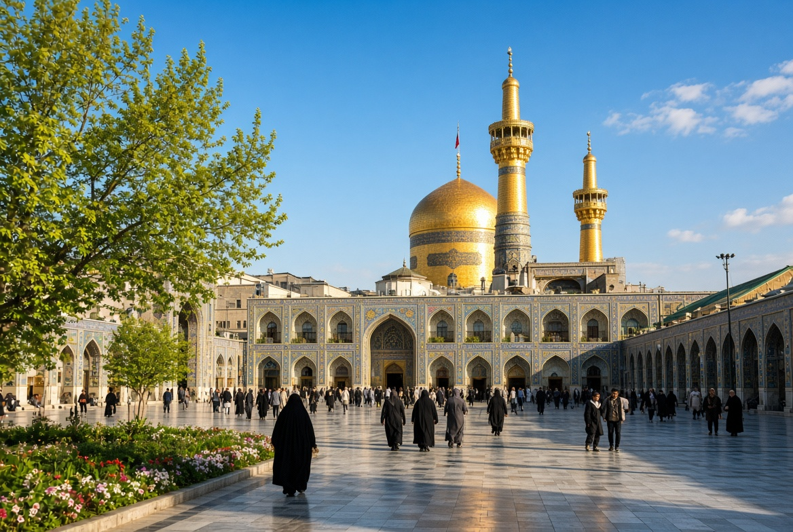

دليل السفر إلى مشهد · أفضل وقت لزيارة مشهد، مواسم الزيارة، الطقس والازدحام
ما أفضل وقت لزيارة مشهد؟
الإجابة المختصرة
لا يوجد موعد مثالي واحد لزيارة مشهد؛ فالوقت الأنسب يتوقف على أولوياتك، مثل الطقس وكثافة الزوار ومدة الإقامة ومدى تقبلك للتنقل. قارن هذه العوامل بحسب تواريخ سفرك، وتحقق من معلومات الطقس والازدحام المتاحة قبل تثبيت خطتك.
يعتمد الموعد الأنسب لزيارة مشهد على أولوياتك: أجواء الطقس، كثافة الزوار، مدة الإقامة، والقدرة على تحمّل التنقل. لا يوجد شهر مثالي للجميع؛ استخدم هذا الدليل للمقارنة ثم تحقّق من الظروف الفعلية قبل الحجز.

الربيع أحد المواسم التي يمكن دراستها عند التخطيط لزيارة مشهد.
إعداد: حسين · دليل عملي للزائر العربي
اختر الموعد بحسب هدف الرحلة
إذا كانت الأولوية الهدوء النسبي، فابحث عن الفترات خارج العطل والمناسبات الكبرى، مع إدراك أن الازدحام قد يختلف من يوم إلى آخر. أما إذا كان هدفك المشاركة في مناسبة دينية محددة، فابدأ بتثبيت موعدها من مصدر موثوق ثم خطط للإقامة والنقل مبكراً.
لا تعتمد على وصف عام مثل «موسم هادئ» بوصفه ضماناً؛ تحقق من مواعيد العطل الرسمية والإيرانية، والفعاليات، وتوفر الغرف في تواريخك الدقيقة.
الطقس وتجهيز الملابس
راجع توقعات الطقس القريبة من موعد السفر، لا متوسطات قديمة فقط. ضع في الحقيبة طبقات ملابس يمكن تعديلها، وحذاء مريحاً للمشي، واحتياجات الحماية من الشمس أو البرد بحسب التوقعات.
إذا كنت تسافر مع طفل أو شخص كبير في السن، اترك مرونة أكبر في البرنامج خلال الحر أو البرد، واجعل فترات الراحة جزءاً من التخطيط لا خياراً مؤجلاً.
احسب أثر الموعد على الميزانية
قارن تكلفة التذاكر والإقامة والنقل لنفس عدد الليالي، وتأكد مما يشمله السعر وسياسة الإلغاء. ترتفع أو تنخفض الأسعار بحسب الطلب والتوفر؛ لذلك لا تعتبر أي رقم منشور سابقاً سعراً حالياً مؤكداً.
قبل الدفع، اطلب تأكيداً مكتوباً للتواريخ ونوع الغرفة والخدمات والرسوم الإضافية. راجع أيضاً دليل ميزانية رحلة مشهد لتقسيم النفقات.
قائمة تحقق قبل تأكيد الحجز
تحقق من صلاحية وثائق كل مسافر ومتطلبات الدخول من الجهات الرسمية، ومن مواعيد الوصول والمغادرة ووقت تسجيل الدخول إلى الإقامة. احسب وقت الانتقال من المطار إلى مكان الإقامة واترك هامشاً للتأخير.
بدلاً من اختيار الشهر بناءً على وصف عام، قارن تاريخين أو ثلاثة تواريخ محتملة للرحلة وفق أربعة أسئلة: هل الطقس مناسب لأفراد مجموعتك؟ هل يتزامن الموعد مع عطلة أو مناسبة دينية؟ هل تتوفر إقامة بشروط إلغاء واضحة؟ وهل تسمح مدة الرحلة بوقت كافٍ للراحة والتنقل؟
إذا كانت الراحة المناخية أولوية: راجع توقعات الطقس الأقرب إلى موعد السفر، ثم قارن درجات الحرارة والرياح والهطول المتوقعة خلال أيام الإقامة.
إذا كانت المشاركة في مناسبة دينية أولوية: تحقق من التاريخ من مصدر موثوق، ثم اسأل مكان الإقامة عن سياسة التعديل والازدحام المتوقع دون افتراض توفر الغرف.
إذا كنت تسافر مع أطفال أو كبار السن: اختر برنامجاً أقل ازدحاماً بالانتقالات، واجعل وقت الراحة بديلاً ثابتاً لا نشاطاً مؤجلاً.
اكتب لكل موعد تكلفة الإقامة والنقل وشروط الإلغاء في سطر مستقل؛ فالمقارنة على أساس السعر الإجمالي والخدمات المشمولة أدق من مقارنة سعر الليلة وحده.
هذه الروابط أدوات للتحقق وليست ضماناً للطقس أو الازدحام أو توفر الخدمات في تاريخ محدد.
مشهد في الفصول الأربعة: ماذا تضع في الحقيبة؟
الإجابة المختصرة: الربيع والخريف غالباً أكثر اعتدالاً للتنقل، والصيف قد يكون حاراً وجافاً، بينما الشتاء بارد وقد يشهد صقيعاً أو ثلوجاً. اختر الموعد وفق قدرتك على تحمل الطقس وازدحام الزيارة وتكلفة الإقامة، لا وفق الطقس وحده.
الفصل
ما تتوقعه عموماً
استعداد عملي
الربيع
أجواء متغيرة ومعتدلة غالباً، مع احتمال أمطار وتقلب الحرارة
ملابس بطبقات، حذاء مريح، وطبقة خفيفة مقاومة للمطر
الصيف
حرارة أعلى وجفاف، خاصة في ساعات النهار
ملابس خفيفة محتشمة، ماء، ومرونة في توقيت المشي والأنشطة الخارجية
الخريف
اعتدال في بدايته ثم انخفاض تدريجي للحرارة
طبقات قابلة للإضافة مساءً، ومتابعة التوقعات قبل المغادرة
الشتاء
برد واضح، وقد تحدث موجات صقيع أو تساقط ثلوج
معطف دافئ وحذاء مناسب للبرد والبلل، والتحقق من حالة الطرق والرحلات
هذه أوصاف موسمية عامة وليست توقعاً للطقس في يوم بعينه. راجع النشرة الجوية المحلية قبل السفر وأعد التحقق قبل كل يوم من برنامجك، خصوصاً في الشتاء أو عند التخطيط للتنقل خارج مركز المدينة.
المواسم الدينية والازدحام: كيف تختار الموعد؟
قد يرتفع عدد الزوار في مناسبات دينية ومواسم مثل محرم وصفر ورجب، وفي أيام إحياء المناسبات المرتبطة بالتقويم الهجري. تتغير التواريخ الميلادية المقابلة سنوياً، كما تختلف شدة الازدحام بحسب المناسبة والظروف المحلية؛ لذلك لا تعتمد على تاريخ ثابت أو جدول قديم.
تحقق من التاريخ الهجري والميلادي للمناسبة من تقويم موثوق قبل شراء التذاكر.
اسأل الفندق عن سياسة الإلغاء والدفعة المقدمة وتوفر الغرف في تلك الفترة.
اترك وقتاً إضافياً للوصول إلى الحرم والتنقل، ولا تضع مواعيد متتابعة.
اتفق مع الأسرة على نقطة لقاء وخطة بديلة إذا انقطع الاتصال أو تفرقت المجموعة.
تحقق من تعليمات الدخول والخدمات والمداخل المتاحة في يوم الزيارة مباشرة.
قد تتغير أسعار النقل والإقامة حسب الطلب؛ قارن الأسعار النهائية لتواريخ مختلفة.
ماذا أفعل إذا تغير الطقس؟
احتفظ بخطة بديلة وتحقق من حالة الطرق وأوقات الوصول قبل التحرك.
أفضل وقت لزيارة مشهد بحسب الطقس والازدحام والميزانية
عند اختيار أفضل وقت لزيارة مشهد، قارن درجات الحرارة المتوقعة وكثافة الزوار والمناسبات الدينية وأسعار الرحلات والإقامة في تواريخك الفعلية. قد تكون الفترات الأقل ازدحاماً أنسب لمن يفضل الهدوء، بينما تتطلب المواسم الدينية حجزاً مبكراً ومرونة أكبر؛ ولا توجد فترة واحدة مثالية لكل الزوار.